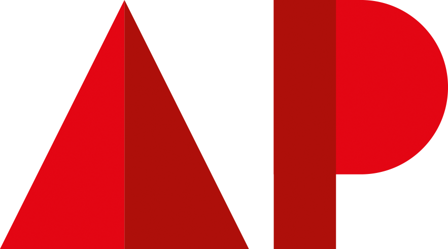
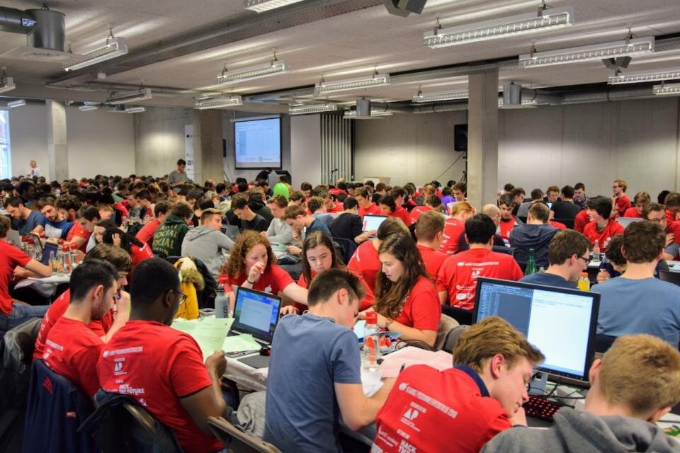

Op woensdag 13 maart zakten meer dan 400 IT'ers af naar AP om deel te nemen aan de Vlaamse Programmeerwedstrijd. De wedstrijd vond plaats op campus Spoor Noord en trok kandidaten uit heel Vlaanderen aan. In totaal streden 135 teams voor de titels in vier categorieën. Uit het secundair onderwijs kwamen maar liefst 41 teams opdagen; daarnaast waren ook teams van studenten uit professionele en academische bacheloropleidingen, masterstudenten en IT-professionals aanwezig. De winnaars kregen een prijs en een certificaat uit handen van vooraanstaande IT-bedrijven, zoals Hack The Future, Dotnet Academy, Sioux en ABC Groep.
Kelly Casal, opleidingshoofd Toegepaste Informatica aan AP Hogeschool vertelt over het evenement: “We hopen hiermee studenten te stimuleren om verder IT te studeren en later te kiezen voor een knelpuntberoep. Bij AP zien we de laatste jaren het aantal IT-studenten stijgen. We hopen op dit elan verder te kunnen gaan en zijn dan ook zeer enthousiast dat we dit jaar de Vlaamse Programmeerwedstrijd mogen organiseren. Dat lukte dankzij de intensieve samenwerking tussen de opleidingen Elektronica-ICT en Toegepaste Informatica."
Dat programmeren niet om abstracte vraagstukken hoeft te gaan, bewees de organisatie bij deze wedstrijd. De voorgelegde programmeervraagstukken vielen op door hun creatieve en originele insteek. Zo werden de deelnemers onder meer uitgedaagd om een ‘Splitwise’-algoritme schrijven voor de dwergen van Sneeuwwitje, die de ontgonnen diamanten onderling moesten verdelen.
De Vlaamse programmeerwedstrijd is geen klassieke olympiade. Robin Van Loock, deelnemer en IT’er bij Mecoms, licht toe: “Deze wedstrijd gaat niet gewoon over programmeren. Hier is teamwork een heel belangrijke factor, en dat is een groot verschil met de wedstrijden waar je online aan kan deelnemen.” De teams bestaan telkens uit drie deelnemers, en slechts een persoon heeft een laptop. Slagen voor de programmeeropdrachten is dus enkel mogelijk door intensief samen te werken en open te staan voor de inbreng van anderen.
Van Loock vult tot slot nog aan: Het is heel fijn om te zien dat zoveel jonge mensen een namiddag vrijmaken om te komen programmeren. De toekomst is verzekerd!